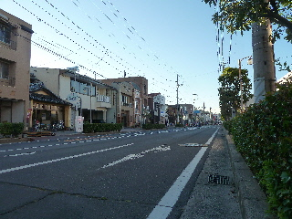
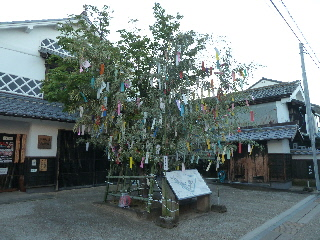
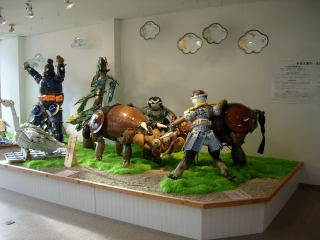
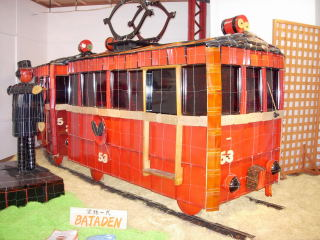

平田まつりに行きましたけど...
2015/07/25
夕方に平田まつりに行きました。

シーン。
ちょうど何もやっていない時間でした。

屋台で買い食いして帰りました。
プログラムを確認して行けば良かったですね。
2015/07/25
夕方に平田まつりに行きました。

シーン。
ちょうど何もやっていない時間でした。

屋台で買い食いして帰りました。
プログラムを確認して行けば良かったですね。
2010/07/25
今年はお化け屋敷がある！ってちょっと楽しみに行ったんですが、子供達が沢山並んでいたので遠慮しました。
美味しいものや冷たいものを食べながら散歩して帰りました。


行った時間が良かったのか？地元の人は見慣れているせいか？私が行った時この展示場はとっても空いてて良かったです。
のんびり見れました。
2009/7/20
第31回って事なので、新しいお祭ですね。七夕仮装船行列があるのは夜なので、夜の方がメインだと思うんですが、13時から開催されているので、昼間に見に行きました。
昼間はメインステージで色々催しをしていました。街中のお祭はお客さんが多く、賑わっていいですね。（浜山公園とかだと広々している分、お祭の賑わいがなんか足りないんですよね。あと地元の子が自力で参加できると、はしゃいでる子供が多く明るい雰囲気がしていいですね。）
今日の天気予報は曇りだったので、雨は降らないと思って行ったんですが、ザーザー雨が降ってしまいました。雨宿りしてたら小雨になったんですが、また雨が降るかも？って思ったら不安になってしまい、ささっと帰りました。梅雨時のお祭は辛いですね。
平田町の夏祭り